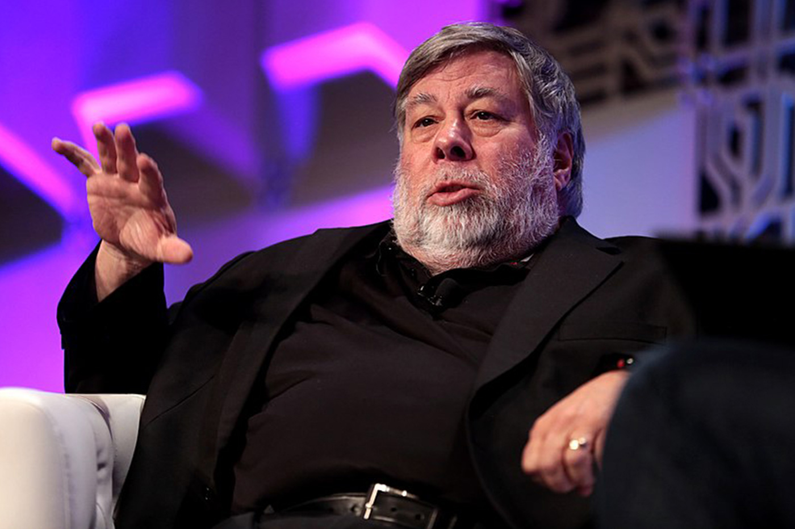

Stephen Wozniak, dit Steve Wozniak, né le 11 août 1950 à San José, aussi appelé Woz, est un informaticien, professeur d'informatique et électronicien américain. Il est cofondateur de la société Apple Computer avec Steve Jobs et Ronald Wayne, et est un des pionniers de l'industrie micro-informatique. En février 1973, Steve Wozniak est embauché par Hewlett-Packard dans le département des produits avancés, qui produit des calculatrices, où il est rapidement rejoint par Bill Fernandez. Il tente alors de rejoindre la division ordinateur de HP, en vain. Steve Jobs est employé par Atari pour développer des jeux vidéo, tâche dans laquelle il est aidé par Wozniak hors de son temps de travail. Ses travaux pour Apple sont arrêtés après un accident d'avion en février 1981, à la suite duquel Steve Wozniak souffre d'amnésies pendant quelques semaines. Wozniak devient moins enthousiaste dans son travail pour Apple. Il se marie avec Candice Clark, retourne à l'université sous le nom de « Rocky Clark » pour obtenir en 1986 ses diplômes en informatique et en électrotechnique. il quitte Apple le 6 février 1987, 12 ans après la création de la société ; il touche d'Apple un salaire symbolique d'environ 120 000 $ par an. Jobs quitte aussi Apple à la suite d'une lutte pour le pouvoir à la tête de la société. Wozniak sponsorise alors des actions caritatives dans le domaine de l'éducation, ce qui ne l'empêche nullement d'acheter les nouveaux produits Apple pour les étudier et les mettre à la disposition des écoles.
L’Apple I fut le premier produit d'Apple mis en vente en avril 1976. Son prix était alors de 666,66 dollars3, ce qui correspondrait aujourd'hui à environ 2 700 $ (2 070 euros) en prenant en compte l'inflation4. Environ 200 unités furent produites. Une cinquantaine d'entre elles ont été vendues par un magasin d'électronique de Mountain View. À la différence d'autres ordinateurs amateurs de cette époque, qui étaient vendus en kit, l'Apple I était constitué uniquement d'une carte assemblée comprenant des composants électroniques dont environ 21 circuits intégrés. Cependant, pour en faire un ordinateur fonctionnel, les utilisateurs devaient encore l'intégrer dans un boîtier avec une alimentation, un clavier, et un écran de télévision.
L'Apple II (parfois orthographié Apple ][ ou Apple //) est l'un des premiers ordinateurs personnels au monde fabriqué à grande échelle1. Conçu par Steve Wozniak, commercialisé le 10 juin 1977 par Apple, il commence sa carrière auprès des particuliers passionnés, mais la sortie du premier tableur, VisiCalc en 1979 permit son entrée dans le monde professionnel et une augmentation très importante de ses ventes, faisant la richesse subite de la société Apple à cette époque. Les Apple II ont évolué au cours des années 1980, et ont été vendus jusqu'en 1993. L'Apple II avait une architecture principalement 8 bits, et diffère complètement des Apple Macintosh introduits en 1984 (voir la chronologie informatique pour avoir les dates de sortie des modèles de la famille Apple II - l'Apple II de 1977, le II plus, IIe, IIc et IIGS). La partie du nom en « II » était successivement écrite en utilisant une multitude de moyens graphiques et de symboles de ponctuation. Ainsi le II et le II+ furent généralement écrits « ][ » et « ][+ », le IIe et le IIc s’écrivaient « //e » et « //c », aussi bien sur les manuels que les machines elles-mêmes. Il succède à l'Apple I, qui était une machine construite artisanalement et vendue aux amateurs. Cette machine n'a jamais été produite en quantité, mais fraya le chemin de plusieurs des caractéristiques faisant des Apple II un succès.
Apple III fut le successeur de l'Apple II. C'était un ordinateur visant le marché professionnel. Il était équipé du système d'exploitation Apple SOS (en) (Sophisticated OS). S'il est resté équipé d'une interface texte classique, comme l'Apple II, son originalité technique est de ne pas comporter de ventilateur : Steve Jobs a en effet compris la nuisance que le bruit de ceux-ci représentait en termes de déconcentration et de fatigue de fin de journée. Cette conception sera aussi à l'origine de son échec commercial, car sur les premières versions de l'Apple /// les cartes électroniques se bombent à chaque mise sous tension par dilatation thermique, puis reprennent leur forme chaque soir à la mise hors tension : au bout de quelques mois, les contraintes répétées que ces déformations entraînent sur les contacts seront à l'origine de pannes répétées sur l'Apple III qui sera en fin de compte rejeté par le marché en raison de ces problèmes de fiabilité. Les ingénieurs d'Apple tireront la leçon de cet échec en donnant au Macintosh une forme en cheminée favorisant l'élimination de la chaleur par convection naturelle. Les nuisances dues au bruit, bien que prises en compte sur certains ordinateurs spécifiques comme l'IBM PC 300, ne le seront vraiment de façon généralisée qu'à partir de l'an 2000.
er
ème
nd